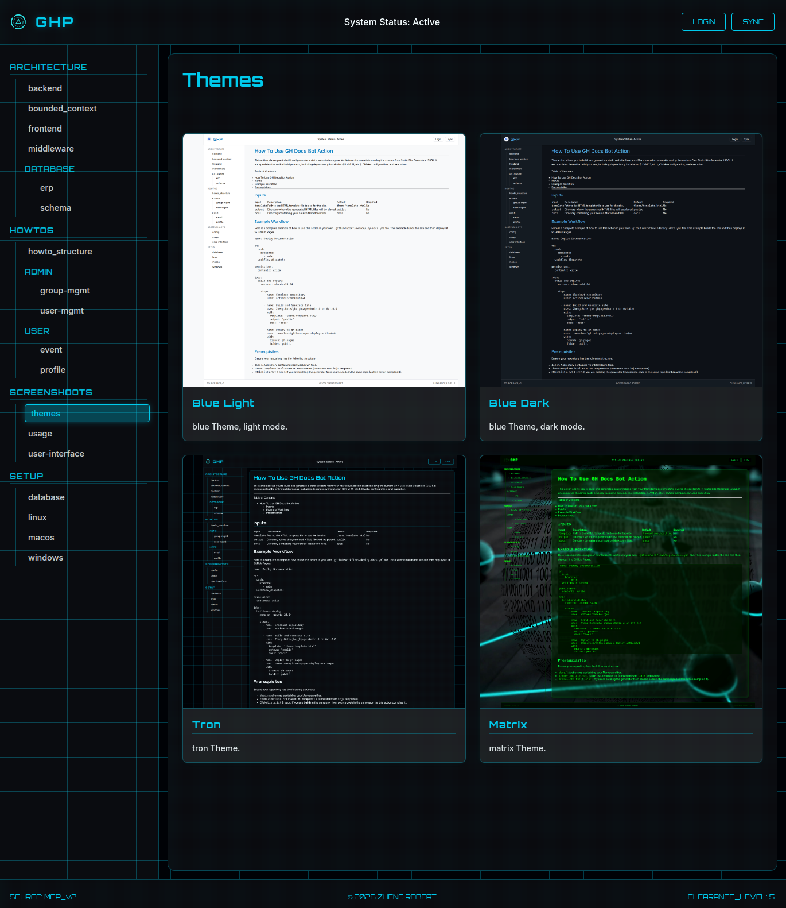

Github Action for GitHub Pages - gh_docs_bot


gh_docs_bot is a high-performance, custom C++ Static Site Generator (SSG) packaged as a reusable GitHub Action. It is designed to automatically build and deploy static documentation websites from Markdown files directly within your GitHub workflows.
Table of Contents
Description
Github Action for building and deploying static documentation websites from Markdown files directly within your GitHub workflows.
A lightweight, high-performance Static Site Generator that converts a directory of Markdown files into a static HTML website. It features recursive directory scanning, automatic navigation generation, modern templating and automated asset management.
🚀 Features
- High Performance: Built with C++23, utilizing
md4cfor ultra-fast Markdown processing. - Zero-Config Bundle: The GitHub Action handles all dependencies, including LLVM 21, CMake, and Ninja.
- Customizable: Uses Inja for flexible HTML templating.
- GitHub Pages Ready: Optimized for deploying directly to
gh-pages. - Security Focused: Includes built-in SBOM generation and security slices (via CDXGen/Atom integration in the repo).
📦 Usage
You can use this action in your own workflows to build your documentation site. It will compile the generator from source (ensuring the latest version) and run it against your documentation folder.
Quick Start
Add the following step to your .github/workflows/deploy.yml:
- name: Build and Generate Site
uses: Zheng-Bote/gha_ghpages@main
with:
template: "theme/desktop/template.html" # Path to your HTML template
assets: "theme/tron/assets" # Path to your assets
output: "public" # Output directory
docs: "docs" # Directory with Markdown (*.md) and/or HTM (*.htm) files
[!TIP] see themes folder for examples
📚 Documentation
For a comprehensive guide on how to configure inputs, set up your repository structure, and a full workflow example, please read our How-To Guide or the GitHub Pages: Documentation.
Screenshoots

[!NOTE] see more screenshoots in GitHub Pages: Documentation
📄 License
Distributed under the MIT License. See LICENSE for more information.
Copyright (c) 2026 ZHENG Robert
🤝 Contributing
Contributions are welcome! Please fork the repository and create a pull request.
- Fork the Project
- Create your Feature Branch (git checkout -b feature/AmazingFeature)
- Commit your Changes (git commit -m 'Add some AmazingFeature')
- Push to the Branch (git push origin feature/AmazingFeature)
- Open a Pull Request
👤 Author
Code Contributors

:vulcan_salute: